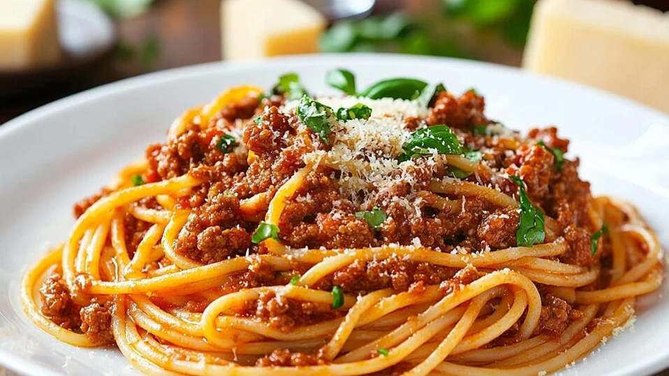

My spaghetti! (I stole this photo from internet sorry)
This spaghetti bolognese is very easy to make and is a crowd pleaser. This is optional, but I like to add some paprika as well.
This dish usually takes about 15 minutes to prep and 30 or so minutes to cook. Total: 45 Minutes